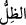
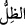
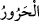
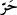
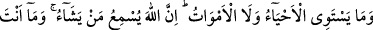
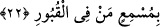

yürüyüp gitse elinde yanan mumlar ve nurdan meş’aleler vardır. Burada bâtıl çok
çeşitli; hak ise bir tek olduğu için “nur” tekil, “zulümât” ise çoğul gelmiştir. Yani, hak
birdir, o da tevhid’dir. Mümin ve muvahhid olan yalnız Allah’a ibâdet eder. Bâtılın yol
ve yönleri çoktur. Yıldıza, ateşe, putlara daha başka nesnelere tapan nice bâtıl ehli
vardır. Bütün bu zulümât, karanlıklar ve bâtıllar içinde bir tek olan nura denk ve eşit bir
şey bulamazsınız.
Yine burada nefsin zulmet ve karanlığına ve ruhun nur ve aydınlığına işâret vardır.
Zira mahcûb ve perdelenmiş olan bir kimse, böyle kesif bir gaflet karanlığındadır.
Mükâşef olup keşfi açılmış olan da ruh ve uyanıklık nurundadır.
21)
“Gölge ile sıcak bir olmaz.” Burada âyet sonlarında uygunluk olması için kör görene,
zulümât nûra, zıl harûr’a takdim edilmiş, önce zikredilmiştir. Bu kavl-i ilâhî cennet
cehennem, sevap azap, râhat ve şiddeti temsil etmektedir.
“
”, gölge anlamına gelir. Farsça “sâye” demektir. Râğıb der ki; güneşin ulaşmadığı
her yere “
” denilir. “ ” ise güneşin göğün ortasından batıya meyletme noktasındaki
gölgeye denilir. Buna “fey-i zevâl” denilir. Yine izzet, şeref, güç, kuvvet ve müreffeh
hayata da “
” denilmiştir.
Kâmûs’da der ki, “
”, gece esen sıcak rüzgardır. Bazen gündüz de eser. Güneşin
hararetine daimi harâret ve ateşe de “
” denilir. Bu kelime “
” kökünden
mübâlağa vezni olup daha çok gündüz esen ve zehir gibi etkileyen sıcak rüzgâra denilir.
Mânâ şöyledir: Gölge ve harâret eşit değildir. Çünkü gölgede nefse istirahat; hararette
ise zahmet, meşakkat ve ıstırap vardır. Aynı şekilde içinde gölge ve rahat olan mümine
âid cennet ile yine içinde şiddetli harâret olan ateş ve cehennem eşit değildir. Burada
şuna işâret edilmektedir. Allah’tan uzak olmak, iç alemi ve gönlü yakmak da sıcak
rüzgar gibidir. Allah’a yakın olmak ise gönlü rahatlatmakta gölge gibidir.
22. Dirilerle ölüler de bir olmaz. Şüphesiz Allah, dilediğine işittirir. Sen
kabirlerdekilere işittiremezsin!
“Dirilerle ölüler de bir olmaz.” Bu kavl-i ilâhî mü’min ve kâfirlere birincisinden
daha beliğ bir temsildir. Bundan dolayı fiil tekrar edilmiş ve her iki grubun fertleri
arasındaki zıtlık ve farkı ortaya koymak için çoğul sığasıyla getirilmiştir. “el-Hay”, diri
ve kendisinde hissetme kuvvesi bulunandır. “el-Meyyit”, ölü ise bu mezkûr durum
kendisinden zâil olandır. Bu temsilin gerekçesi ve semeresi şudur: Mümin hayatından
faydalanır. Çünkü müminin zâhiri zikir; bâtını fikirdir. Kâfir ise böyle değildir. Çünkü